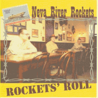

Neva River Rockets - Rockets' Roll (Album, 2005)
01 - Hey Mr. Fish (2:33)
02 - Stay A Little With Me (2:00)
03 - Rock The Joint (1:56)
04 - Blues (Don't Keep Me Down) (2:08)
05 - Hang Loose (2:17)
06 - Country Junction (2:27)
07 - Rockets' Roll (2:35)
08 - All The Sweet Gals Are Mad About Me (2:06)
09 - Tell 'em No (1:55)
10 - I Tried All Ways To Call Mr. Perkins (2:29)
11 - Please Don't Talk About Me When I'm Gone (2:30)
12 - Deep River Blues (2:17)
13 - Drinking Wine (2:29)
14 - Ain't She Sweet (2:36)
15 - Let's Go Dancin' (2:30)
16 - It's Cool, It's Mine And I'm Right (2:28)
17 - Lavatory Rag (2:00)
18 - Rockin' On The 55th Train (2:17)
19 - So Tired Of Cryin' (2:21)
20 - Gone Gone Gone (3:17)
21 - Big River (2:27)
© TCY-Records :: [Digital]
Notes
Saint-Petersburg, Russia.
Kirill 'Rugged' Prasalov - Electric guitar, Vocals
Dmitry 'The Buoyant' Martemianov - Acoustic guitar, Vocals
Peter 'Pete' Mironov - Upright bass, Vocals
reference information: Discogs®
Review
301/366 (Project 366)
Rockabilly with a honky tonk mind, hillbilly influences and country decoration. Old fashioned rockin' and rollin' from Russia.